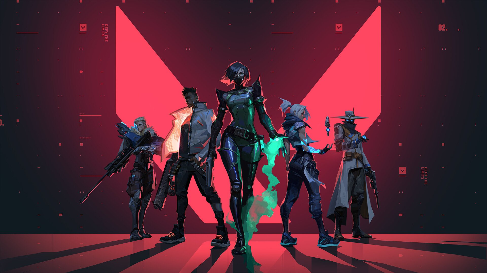

Another hobby of mine is gaming. It allows me to interact with my friends, and it is very entertaining. I have started gaming during the quarantine, because there is nothing to do. I started playing games like valorant, csgo, fornite etc. I have made a lot of friend online through discord. Gaming allows me to relieve stress, and enjoy myself after an intense test or assignment. In my opinion gaming is a good way to cope with stress, it also allows you to communicate with your friends more. During quarantine, people in my middle school had made a gaming group were we can ask each other to play games if we are bored. I am also interested in computers like pc's computer gear etc. Currently I am saving up for expensive gear like the new nvidia 30 series gpus. Quarantine has gotten me into gaming, and it allows me to cope with stressful times.
Valorant is a 5v5 fps shooter game, it has different character/abilities. You use these abilities strategically, and your aim to win. There are many different settings, like changing your corsair color, size etc. and a new one where you can put your gun on the left or right side of your character. Valorant allows you to stratagize and think about each play you are going to do
Fortnite is another stratigic game where you can build things and edit those builds. The point of that is to get a good peak on your opponent so you can shoot them with your gun. There are many different game modes in fortnite from battle royale, to making your own maps. Fortnite allows you to get creative and also practice stratagy.